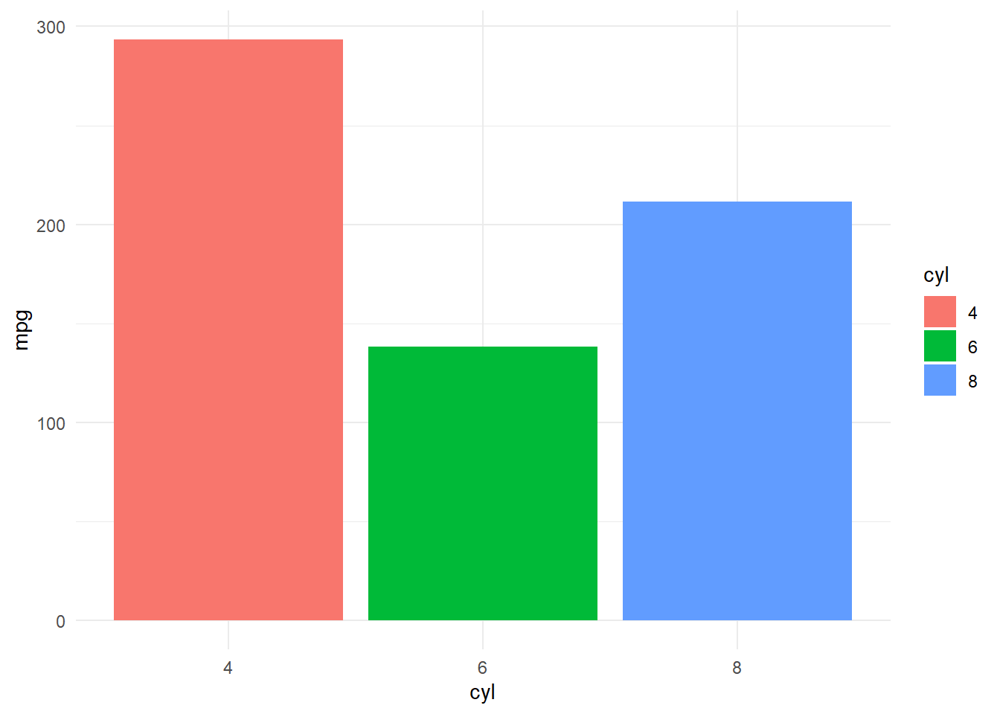

4. Lập trình hàm¶
Khi phân tích dữ liệu, một kỹ năng nâng cao giúp tăng năng suất phân tích là kỹ năng viết hàm. Về lý thuyết, bất cứ đoạn code nào cũng có thể chuyển thành hàm. Một hàm viết tốt phải đảm bảo 3 yếu tố chính:
- Linh động: Có thể sử dụng trong nhiều tập dữ liệu khác nhau
- Ngắn gọn: Chỉ giải quyết 1 vấn đề cụ thể, không nên cho quá nhiều vấn đề trong một hàm.
- Mở rộng: Có thể mở rộng khi tăng số biến và giải quyết được vấn đề tổng quát
Việc viết hàm là cả một nghệ thuật và đòi hỏi có sự hiểu biết sâu sắc về R. Tuy nhiên, khi đứng dưới góc độ ứng dụng, ta có thể viết hàm một cách nhanh chóng dựa trên khái niệm về NSE (Non Standard Evaluation).
df <- data.frame(x = 1:3, y = 3:1)
filter(df, x == 3)
## x y
## 1 3 1
Tuy nhiên, câu lệnh sau sẽ không hoạt động
# Cách 1: Không hoạt động
my_var <- x
## Error in eval(expr, envir, enclos): object 'x' not found
df %>% filter(my_var == 1)
## Error: Evaluation error: object 'my_var' not found.
# Cách 2: Không hoạt động
my_var <- "x"
df %>% filter(my_var == 1)
## [1] x y
## <0 rows> (or 0-length row.names)
4.1. Cơ bản về hàm¶
Ba thành phần cơ bản của hàm:
- body(): Code trong hàm
- fomals(): Tham số trong hàm
- environment(): Môi trường của hàm
library(dplyr)
squared <- function(x){return(x^2)}
squared(4)
## [1] 16
squared %>% body
## {
## return(x^2)
## }
squared %>% formals
## $x
squared %>% environment()
## <environment: R_GlobalEnv>
Primitive function: Là các hàm được thực hiện thẳng từ
.Primitive() trên R base và không có các thành phần cơ bản của hàm,
vd: sum, sin, cos…
sum %>% formals()
## NULL
sin %>% body()
## NULL
cos %>% environment()
## NULL
Infix function
Các hàm trong R phần lớn đều là prefix function, nghĩa là tên hàm sẽ
đứng trước tham số. Tuy nhiên ta có thể tạo ra infix function với
các ký tự %name_function%. Loại hàm này có thể sử dụng như các toán
từ +, X trong toán học. Infix function có kết cấu như sau:
``%Toán tử%`` = Hàm
#Prefix function
bin_string <- function(a, b) {paste(a, b, sep = " ")}
bin_string("He", "lo")
## [1] "He lo"
#Infix function
`%+%` <- function(a, b) {paste(a, b, sep = " ")}
"He" %+% "lo"
## [1] "He lo"
`%+%`("He", "Lo")
## [1] "He Lo"
#Ví dụ
5 + 6
## [1] 11
`+`(5,6)
## [1] 11
4.2. Quotes vs. Unquotes¶
- Quotes là cách thức biến chỉ được lưu dưới dạng string mà chưa đề cập đến giá trị mà biến đó chứa.
- Unquote là việc tính toán giá trị mà biến thực sự lưu trữ.
Ví dụ, x <- 5 thì "x" là quote vì chỉ lưu tên của biến dưới dạng
string. x = 5 là unquote vì đã tính đến giá trị thực sự mà x lưu trữ
là 5.
Xem thêm ví dụ sau:
greet <- function(name){
print("Hello, name!")
}
greet("duc anh")
## [1] "Hello, name!"
Hàm trên không hoạt động như chúng ta mong muốn vì name đang được
quotes và chỉ lưu trữ dưới dạng string.
greet <- function(name){
glue::glue("Hello, {name}!")
}
greet("duc anh")
## Hello, duc anh!
Ở hàm thứ hai, name được tính toán đến giá trị thực sự mà biến này
đang lưu trữ (giá trị duc anh).
Để quotes, ta dùng hàm quo(). Kết quả của quo() là
quosure, một dạng của biểu thức (formula).
quo(x)
## <quosure>
## expr: ^x
## env: global
quo(a + b + c)
## <quosure>
## expr: ^a + b + c
## env: global
quo("group_var")
## <quosure>
## expr: ^"group_var"
## env: empty
Để sử dụng quosure trong hàm, ta sử dụng enquo. Sự khác biệt
giữa quo và enquo có thể phân cấp như sau:
quo: Tạoquosurevới biếnenquo: Tạoquosurevới giá trị của biến.
x <- 5
# Ví dụ 1
quo(x)
## <quosure>
## expr: ^x
## env: global
enquo(x)
## <quosure>
## expr: ^5
## env: empty
# Ví dụ 2
quo(x + 2)
## <quosure>
## expr: ^x + 2
## env: global
Để unquote, ta dùng hàm !! để tính các giá trị mà biến đang lưu
trữ.
my_summarise <- function(df, group_var) {
group_var <- quo(group_var)
print(group_var)
df %>%
group_by(!! group_var) %>%
summarise(mean = mean(mpg))
}
my_summarise(mtcars, cyl)
## <quosure>
## expr: ^group_var
## env: 000000000D74B578
## Error: Column `group_var` is unknown
Câu lệnh trên không thực hiện được vì quo(group_var) sẽ trả ra kết
quả là ^group_var, giá trị này không tồn tại. Cái chúng ta cần là
biểu thức (expression) dạng ^cyl. Lúc này, ta phải dùng enquo
my_summarise <- function(df, group_var) {
group_var <- enquo(group_var)
print(group_var)
df %>%
group_by(!! group_var) %>%
summarise(mean = mean(mpg))
}
my_summarise(mtcars, cyl)
## <quosure>
## expr: ^cyl
## env: global
## # A tibble: 3 x 2
## cyl mean
## <dbl> <dbl>
## 1 4 26.7
## 2 6 19.7
## 3 8 15.1
my_var <- quo(mpg)
mtcars %>% summarise(mean = mean(!!my_var))
## mean
## 1 20.09062
Ta cũng có thể sử dụng quo, enquo với một nhóm các biểu thức như
sau
exp <- quo(summarise(
mtcars, mean(mpg)
))
exp
## <quosure>
## expr: ^summarise(mtcars, mean(mpg))
## env: global
4.3. Trường hợp dùng quo_name¶
quo_name cho phép convert biểu thức thành dạng string.
x <- 5
quo(x)
## <quosure>
## expr: ^x
## env: global
quo(x) %>% quo_name()
## [1] "x"
enquo(x)
## <quosure>
## expr: ^5
## env: empty
enquo(x) %>% quo_name
## [1] "5"
Lưu ý:
- Khi tạo các biến mới hoặc sử dụng dấu gán trong hàm khi lập trình,
cần dùng dấu
:= - Giá trị được gán (bên trái dấu gán) phải có
!!
- Ví dụ khi sử dụng với rename
my_rename <- function(data, var){
var <- enquo(var)
new_var <- paste0("new_", quo_name(var))
data <- data %>%
rename(!!new_var := !!var)
return(data)
}
my_rename(mtcars, mpg) %>% head
## new_mpg cyl disp hp drat wt qsec vs am gear carb
## Mazda RX4 21.0 6 160 110 3.90 2.620 16.46 0 1 4 4
## Mazda RX4 Wag 21.0 6 160 110 3.90 2.875 17.02 0 1 4 4
## Datsun 710 22.8 4 108 93 3.85 2.320 18.61 1 1 4 1
## Hornet 4 Drive 21.4 6 258 110 3.08 3.215 19.44 1 0 3 1
## Hornet Sportabout 18.7 8 360 175 3.15 3.440 17.02 0 0 3 2
## Valiant 18.1 6 225 105 2.76 3.460 20.22 1 0 3 1
- Khi sử dụng với
mutate
my_mutate <- function(data, var){
var <- enquo(var)
data <- data %>%
mutate(!!"new_var" := !!var*2)
return(data)
}
mtcars %>%
select(mpg) %>%
my_mutate(mpg) %>% head
## mpg new_var
## 1 21.0 42.0
## 2 21.0 42.0
## 3 22.8 45.6
## 4 21.4 42.8
## 5 18.7 37.4
## 6 18.1 36.2
4.4. Trường họp nhiều biến¶
- Khi có nhiều biến, ta dùng
quos(...)&!!!thay choenquovà!!
my_summarise <- function(df, value_var,...){
group_var <- quos(...)
value_var <- enquo(value_var)
df %>% group_by(!!!group_var) %>%
summarise(mean = mean(!!value_var))
}
my_summarise(mtcars, mpg, cyl, vs)
## # A tibble: 5 x 3
## # Groups: cyl [3]
## cyl vs mean
## <dbl> <dbl> <dbl>
## 1 4 0 26
## 2 4 1 26.7
## 3 6 0 20.6
## 4 6 1 19.1
## 5 8 0 15.1
Lưu ý: Trong thực tế, khi không muốn viết hàm mà vẫn có thể sử dụng
ứng dụng của toán tử !, ta có thể sử dụng toán tử !!! nhu sau.
my_var <- c("mpg", "cyl")
mtcars %>% select(!!!my_var) %>% head
## mpg cyl
## Mazda RX4 21.0 6
## Mazda RX4 Wag 21.0 6
## Datsun 710 22.8 4
## Hornet 4 Drive 21.4 6
## Hornet Sportabout 18.7 8
## Valiant 18.1 6
4.5. Ứng dụng¶
4.5.1. Hàm tính toán tổng hợp nhiều biến¶
analytics_summarise <- function(data, value_var,...){
group_var <- quos(...)
value_var <- enquo(value_var)
data %>%
group_by(!!!group_var) %>%
summarise(n = n(),
total = sum(!!value_var),
min = min(!!value_var),
q25 = quantile(!!value_var, 0.25, na.rm = T),
q50 = quantile(!!value_var, 0.50, na.rm = T),
q75 = quantile(!!value_var, 0.75, na.rm = T),
q90 = quantile(!!value_var, 0.90, na.rm = T),
q95 = quantile(!!value_var, 0.95, na.rm = T),
max = max(!!value_var),
mean = mean(!!value_var, na.rm = T),
mean_trimed = mean(!!value_var, trim = 0.1, na.rm = T)) %>%
ungroup -> result
return(result)
}
# Một biến
mtcars %>%
analytics_summarise(mpg, cyl)
## # A tibble: 3 x 12
## cyl n total min q25 q50 q75 q90 q95 max mean
## <dbl> <int> <dbl> <dbl> <dbl> <dbl> <dbl> <dbl> <dbl> <dbl> <dbl>
## 1 4 11 293. 21.4 22.8 26 30.4 32.4 33.2 33.9 26.7
## 2 6 7 138. 17.8 18.6 19.7 21 21.2 21.3 21.4 19.7
## 3 8 14 211. 10.4 14.4 15.2 16.2 18.3 18.9 19.2 15.1
## # ... with 1 more variable: mean_trimed <dbl>
# Nhiều biến
mtcars %>%
analytics_summarise(mpg, cyl, am)
## # A tibble: 6 x 13
## cyl am n total min q25 q50 q75 q90 q95 max mean
## <dbl> <dbl> <int> <dbl> <dbl> <dbl> <dbl> <dbl> <dbl> <dbl> <dbl> <dbl>
## 1 4 0 3 68.7 21.5 22.2 22.8 23.6 24.1 24.2 24.4 22.9
## 2 4 1 8 225. 21.4 25.2 28.8 30.9 32.8 33.4 33.9 28.1
## 3 6 0 4 76.5 17.8 18.0 18.6 19.8 20.7 21.1 21.4 19.1
## 4 6 1 3 61.7 19.7 20.4 21 21 21 21 21 20.6
## 5 8 0 12 181. 10.4 14.0 15.2 16.6 18.6 18.9 19.2 15.0
## 6 8 1 2 30.8 15 15.2 15.4 15.6 15.7 15.8 15.8 15.4
## # ... with 1 more variable: mean_trimed <dbl>
4.5.2. Vẽ đồ thị với ggplot2¶
Tương tự với dplyr, lập trình NSE có thể sử dụng đơn giản với ggplot2.
my_chart <- function(data, value_var, group_var){
value_var <- enquo(value_var)
group_var <- enquo(group_var)
data %>%
ggplot(aes(!!group_var, !!value_var)) +
geom_bar(stat = "identity",
aes(fill = !!group_var)) +
theme_minimal()
}
mtcars %>%
mutate(cyl = as.factor(cyl)) %>%
group_by(cyl) %>%
summarise(mpg = sum(mpg)) %>%
my_chart(mpg, cyl)
